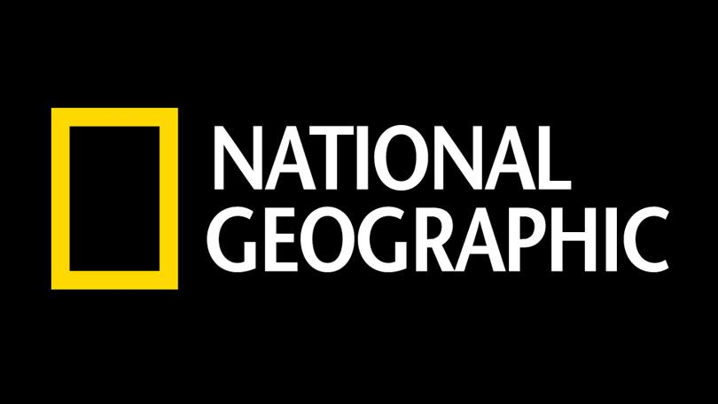
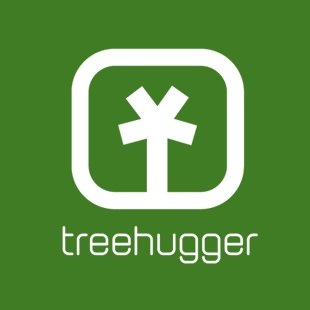
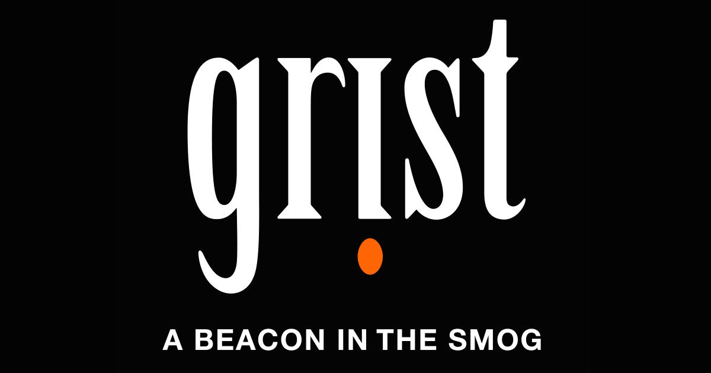

Welcome to the learning zone!
Effects Of Using Plastic Everyday
In the past 50 years the use of everyday disposable plastics has sky rocketed! This is everything from plastic straws to water bottles to grocery bags. As a result of this, the levels of pollution in our oceans are at an all-time high as a huge quantity of our unwanted, disposed plastic, Unfortunately ends up in our oceans. This comes with catastrophic effects on our oceans and our environments overall welfare.
Why Is Plastic So Bad?
- Use Of Non-Renewable Resources
- Plastic is made from a number of natural, non-renewable materials such as cellulose, coal, natural gas, salt and crude oil. These materials are derived from earths crust. Because plastic is such a highly used and demanded material, the levels of production are huge. Unfortunately, our planet cannot keep up with the sheer amount of plastic being produced every year. Therefore, we are eating away at our planets natural resources in order to produce a material which the majority of which ends up in our bins, streets or oceans.
- Production Of Plastic
-
The production of plastic has a very nasty effect on our environment and ozone layer. As stated above, plastic is made from a number of
natural resources.
However, during the manufacturing process of producing everyday plastics, these natural materials are altered by means of mixing
chemicals or exposing them to extreme heat. In doing so, the natural materials release toxic fumes. Not only are these fumes toxic towards
our ozone layer and contributing to the rapid acceleration of global warming. These fumes are also being inhaled by animals as well as
humans. Fumes which have been proven to have cancerous effects on the body. It is one of the leading arguments as to why cancer rates have
soared in the past century.
You wouldn't like if your tap water was polluted by toxic material. Why should the air we breathe be? - Ocean Pollution
-
Unfortunately, there is no getting around the fact that plastic is still being used on a massive scale today. What is so unfortunate about this is
it is believed that almost 12.7 million tonnes of this plastic ends up in our ocean every single year. So much plastic in fact that plastic makes up
for 90% overall ocean debris. As a result of this massive density of plastic, it is estimated that there is approximately 46,000 pieces of plastic
swirling in each square mile of our oceans.
As you can imagine this has a horrendous effect on marine wildlife. To put it into perspective, 86% of sea turtles at some stage ingest or get caught up or tangled in plastic. Plastic directly impacts over 265 species of marine wildlife. Almost 24,000 tonnes of plastic is consumed by such species each year. But not only does it effect our under-water friends. It also has a horrible impact on birds. It is estimated that globally, 44% of seabirds will also at some stage ingest or become tangled in our plastic waste. - It Ain't Going Anywhere
- Plastic is not biodegradable. What I mean by this is, it does not break down into nutrients and rot like you'd expect with something like fruit. Now I know it seems a little silly to compare plastic to fruit, right? Well, not exactly. A huge portion of "everyday items" are manufactured in a way that makes them biodegradable. Some of these items include golf balls, confetti, balloons, even some toothbrushes and coffee cups! What this means is, when a given object is dumped, over a matter of weeks or months, it will begin to break down and rot. Giving nutrients to soils to promote new plant life and of course it means these items do not end up in our oceans, torturing and killing marine wildlife. Plastic however is not manufactured in such a way. Plastics we use everyday can take up to 1,000 years to decompose. This means thousands of years of plastic floating throughout our oceans and washing up and polluting our beaches and coastlines. And as the heading says, it ain't going anywhere anytime soon.
How Can You Help Reduce These Problems?
Listed below are a few simple yet effective habits you can take on in your everyday life in order to reduce the detrimental effect plastic has on our
planet. We can't expect everyone to be perfect, but if everyone took just one of these tips onboard and introduced it into
their daily routine, we would be making a difference.
Remember, power comes in numbers!
- Avoid using plastic straws.
- Use reusable bags when shopping.
- Buy cardboard over plastic.
- Stop buying bottled water. Rather, refill a reusable bottle
- Buy in bulk. This means less plastic as you will not need to buy as often.
- Go for plastic-free alternatives for items. Bamboo toothbrushes for example.
- Use razors with disposable blades as opposed to disposable razors.
Useful Links
Here are some useful links to other informative environmental websites. Just hit the logo and you'll be taken right there.
  Upcoming Environmental Events
| EVENT | LOCATION | DATE |
| Climate and Biodiversity Workshop | The Wood Quay Venue, Dublin | Sat, December 7th 2019 |
| Biohazard Identification Lecture | TUD, Dublin | Mon, December 9th 2019 |
| Protect and Restore Ecosystems | UCD Science Centre, Dublin | Fri, December 27th 2019 |
| Waste Management Workshop | Croke Park Conference Centre | Sun, December 29th 2019 |
| EVENT | LOCATION | DATE |
| Environmental Triggers Lecture | The Merchant Hotel, Antrim | Sun, December 8th 2019 |
| Sustainable Energy Workshop | Queen's University, Belfast | Mon, December 9th 2019 |
| Reduce, Reuse, Recycle Workshop | The Clayton Hotel, Belfast | Sat, December 28th 2019 |
| Effects Of Plastic Production Lecture | Queen's University, Belfast | Mon, December 30th 2019 |